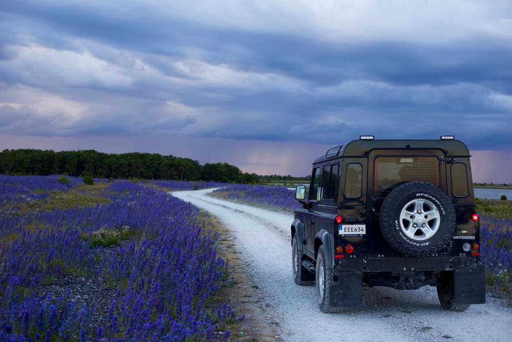

this is top of page
external links
click to navigate to google
internal links
about our page
second page
same page links
carimage
empty link
Hello World
image
lord shiva
image from internet
car

back to top
back to top